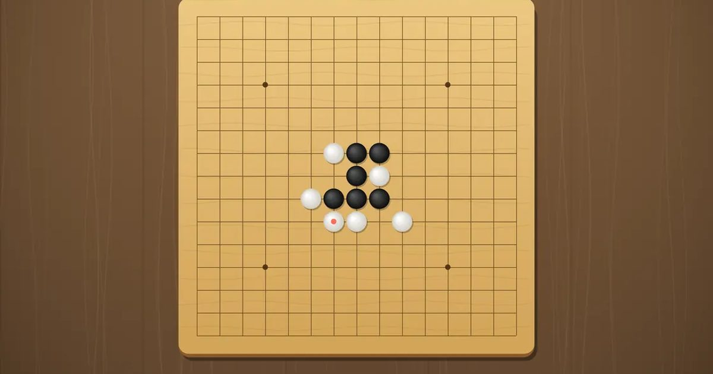

오목
Gomoku
보드 · 1P/2P/온라인무료설치 없음폰 · PC
▶ 지금 바로 하기로그인 없이 브라우저에서 바로 시작돼요
어떤 게임인가요?
15×15 판에 먼저 다섯 줄을 만들면 승리. 열린 3을 한 번에 두 개 만드는 삼삼은 금지! CPU · 한 기기 둘이서 · 온라인 방 대전.
목표 · 가로 · 세로 · 대각선 어느 방향이든 내 돌 다섯 개를 먼저 한 줄로 이으세요.
이렇게도 찾아요
오목 게임오목 두기온라인 오목친구랑 오목오목 AIgomokufive in a rowomok online
#오목 #오목게임 #보드게임 #두뇌게임
게임 방법
- 흑이 먼저 두고, 한 수씩 번갈아 둡니다.
- 삼삼 금지: 한 수로 "열린 3"을 두 개 동시에 만드는 자리에는 둘 수 없어요. 지금 둘 수 없는 자리는 판에 빨간 ×로 보여 줘요.
- 열린 3: 양 끝이 비어 있어서 한 수만 더 두면 막을 수 없는 열린 4가 되는 세 돌 (한 칸 띈 모양 포함).
- 다섯이 완성되는 자리는 삼삼이어도 둘 수 있어요. 4-4 · 4-3은 허용, 여섯 개 이상도 승리로 쳐요.
- 설정에서 삼삼 금지를 흑백 모두 / 흑만 중에 고를 수 있어요. 온라인에서는 방장 설정을 따라요.
등장하는 것들
- 흑 · 먼저 두는 돌
- 백 · 나중에 두는 돌
- 빨간 × · 이번 차례에 둘 수 없는 삼삼 자리
- 빨간 점 · 방금 둔 수
공략 팁
- 첫 수는 한가운데가 가장 유리해요.
- 상대의 열린 3은 바로 막으세요. 놓치면 열린 4가 되어 막을 수 없어요.
- 4-3을 노리세요. 삼삼과 달리 금지가 아니고, 한 번에 둘 다 막을 수 없어요.
- Hard CPU는 다음 수에 생기는 다섯을 절대 놓치지 않아요.
 왕머리 축구
왕머리 축구 탑 쌓기
탑 쌓기 스도쿠
스도쿠 틀린 그림 찾기
틀린 그림 찾기 딱지치기
딱지치기 포탄 대작전
포탄 대작전